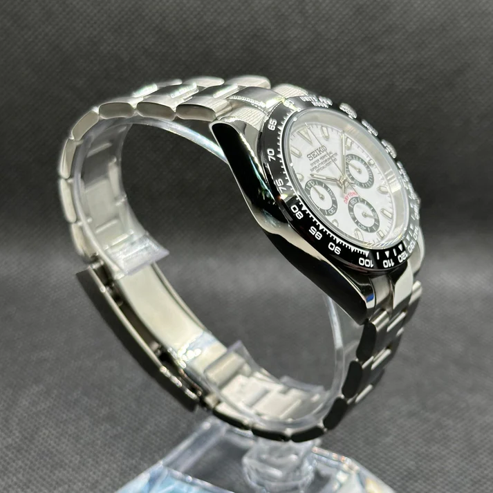
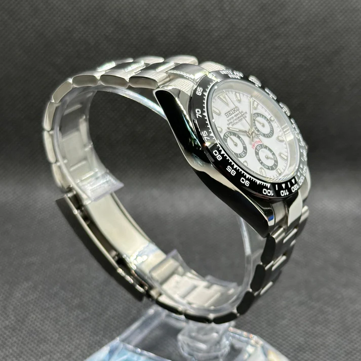

Reloj Seiko Mod Daytona Panda
150 €
Un homenaje al icónico diseño de los cronógrafos de carreras. Este "Panda" Daytona Mod combina una estética deportiva y elegante con la precisión de un movimiento meca-quartz de Seiko. Una pieza ensamblada a mano, perfecta para los amantes de la velocidad y el estilo atemporal.
Especificaciones Técnicas
- Movimiento: Seiko Meca-Quartz VK63
- Material de la caja: Acero inoxidable 316L
- Diámetro de la caja: 39mm
- Grosor de la caja: 13mm
- Cristal: Cristal Mineral Reforzado
- Bisel: Taquímetro fijo de acero
- Correa: Brazalete de acero inoxidable 316L (20cm)
- Ancho de la correa: 20mm
- Asa a asa (Lug to lug): 47mm
- Resistencia al agua: 5 ATM
Proceso de Compra
Para adquirir esta pieza única, contacta conmigo a través de tu método preferido. Coordinaremos los detalles del pago (Bizum o transferencia) y el envío.
Garantía de 1 Año
Tu reloj está cubierto por una garantía de un año en el movimiento y ante cualquier defecto de montaje.
Política de Devoluciones
Al ser un artículo personalizado y montado bajo pedido, no se admiten devoluciones. Estoy a tu disposición para resolver cualquier duda antes de la compra.